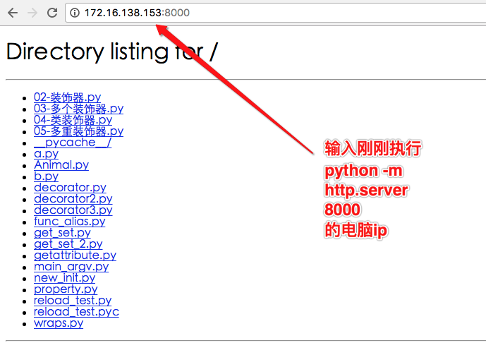
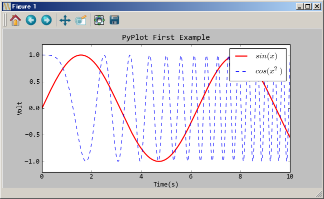

模块进阶
Python有一套很有用的标准库(standard library)。标准库会随着Python解释器，一起安装在你的电脑中的。 它是Python的一个组成部分。这些标准库是Python为你准备好的利器，可以让编程事半功倍。
常用标准库
| 标准库 | 说明 |
|---|---|
| builtins | 内建函数默认加载 |
| os | 操作系统接口 |
| sys | Python自身的运行环境 |
| functools | 常用的工具 |
| json | 编码和解码 JSON 对象 |
| logging | 记录日志，调试 |
| multiprocessing | 多进程 |
| threading | 多线程 |
| copy | 拷贝 |
| time | 时间 |
| datetime | 日期和时间 |
| calendar | 日历 |
| hashlib | 加密算法 |
| random | 生成随机数 |
| re | 字符串正则匹配 |
| socket | 标准的 BSD Sockets API |
| shutil | 文件和目录管理 |
| glob | 基于文件通配符搜索 |
hashlib
import hashlib
m = hashlib.md5() #创建hash对象，md5:(message-Digest Algorithm 5)消息摘要算法,得出一个128位的密文
print m #<md5 HASH object>
m.update('itcast') #更新哈希对象以字符串参数
print m.hexdigest() #返回十六进制数字字符串
应用实例
用于注册、登录....
import hashlib
import datetime
KEY_VALUE = 'Itcast'
now = datetime.datetime.now()
m = hashlib.md5()
str = '%s%s' % (KEY_VALUE,now.strftime("%Y%m%d"))
m.update(str.encode('utf-8'))
value = m.hexdigest()
print(value)
运行结果:
8ad2d682e3529dac50e586fee8dc05c0
更多标准库
http://python.usyiyi.cn/translate/python_352/library/index.html
常用扩展库
| 扩展库 | 说明 |
|---|---|
| requests | 使用的是 urllib3，继承了urllib2的所有特性 |
| urllib | 基于http的高层库 |
| scrapy | 爬虫 |
| beautifulsoup4 | HTML/XML的解析器 |
| celery | 分布式任务调度模块 |
| redis | 缓存 |
| Pillow(PIL) | 图像处理 |
| xlsxwriter | 仅写excle功能,支持xlsx |
| xlwt | 仅写excle功能,支持xls ,2013或更早版office |
| xlrd | 仅读excle功能 |
| elasticsearch | 全文搜索引擎 |
| pymysql | 数据库连接库 |
| mongoengine/pymongo | mongodbpython接口 |
| matplotlib | 画图 |
| numpy/scipy | 科学计算 |
| django/tornado/flask | web框架 |
| xmltodict | xml 转 dict |
| SimpleHTTPServer | 简单地HTTP Server,不使用Web框架 |
| gevent | 基于协程的Python网络库 |
| fabric | 系统管理 |
| pandas | 数据处理库 |
| scikit-learn | 机器学习库 |
就可以运行起来静态服务。平时用它预览和下载文件太方便了。
在终端中输入命令：
python2中
python -m SimpleHTTPServer PORT
python3中
python -m http.server PORT

读写excel文件
1.安装个easy_install工具
sudo apt-get install python-setuptools
2.安装模块
sudo easy_install xlrd
sudo easy_install xlwt
matplotlib
